SHIMOGAMO
京都市左京区田中上柳町Tanaka Kamiyanagi-cho, Sakyo-ku, Kyoto
先着申込受付中NOW ACCEPTING APPLICATIONS
古都の静けさを纏い、
水の流れに耳を澄ます。Wrapped in the quiet of the old capital,
listening to the flow of water.
糺の森が守り伝える悠久の時の流れと、瀬見の小川の清らかなせせらぎ。
日本の美意識が凝縮されたこの地に、引き算の哲学が息づく邸宅が誕生する。
洗練と静謐が重なり合うところに、真の豊かさはある。
Where the ageless forest of Tadasu no Mori keeps time and the clear Semi no Ogawa stream murmurs, a residence shaped by the art of subtraction comes into being. True richness lives where refinement and stillness meet.
CONCEPT
A residence between
river and forest
川と杜のあわいに住まう
京都市左京区、田中上柳町。高野川のほとり、鴨川デルタと糺の森にほど近い一角に、三層の邸宅が誕生します。観光の賑わいから一歩離れた、京都の日常の静けさ。そこには、住まう人だけの時間が流れています。
Tanaka Kamiyanagi-cho, Sakyo-ku, Kyoto. On the banks of the Takano River, close to the Kamo River Delta and the forest of Tadasu no Mori, a three-storey residence takes shape. One step away from the bustle of sightseeing lies the everyday quiet of Kyoto — and a time that belongs only to those who live here.

LOCATION
Where two rivers meet
ふたつの川が出会う場所
賀茂川と高野川が出会い、鴨川となる鴨川デルタ。川を渡れば、世界遺産・下鴨神社と、その境内に広がる糺の森。千年を超えて守られてきた杜と水の風景が、毎日の散歩道になります。
Here the Kamo and Takano rivers meet to become the Kamogawa — the Kamo River Delta. Across the water stand Shimogamo Shrine, a UNESCO World Heritage Site, and Tadasu no Mori, the ancient forest within its grounds. A landscape of forest and water, cherished for more than a thousand years, becomes your daily walk.
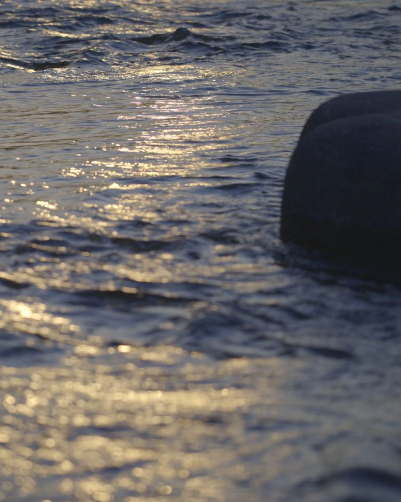
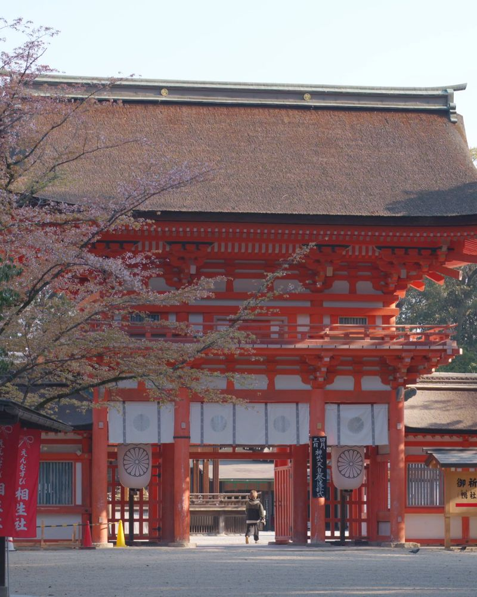
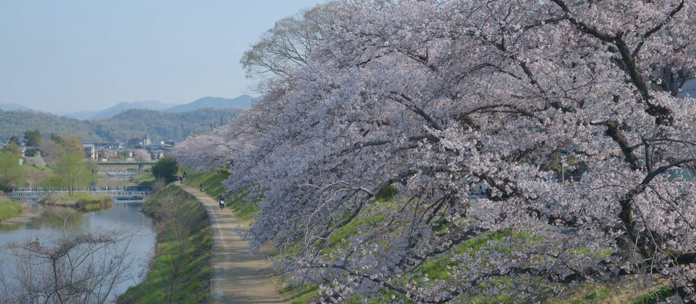
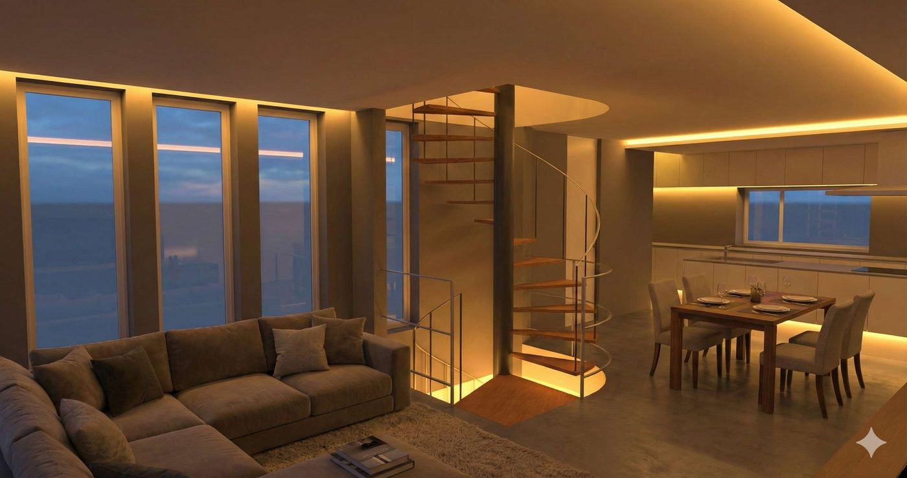
RESIDENCE
Three storeys,
one spiral of light
三層をつなぐ光の螺旋
土間のある一階、大きな窓から光を招く二階のリビング、天窓から光が落ちる三階。三つの階を、一本の螺旋階段がやわらかくつなぎます。
An earthen-floored entrance at ground level, a living room drawing in light through tall windows on the middle level, a skylit landing at the top — all gently joined by a single spiral stair.
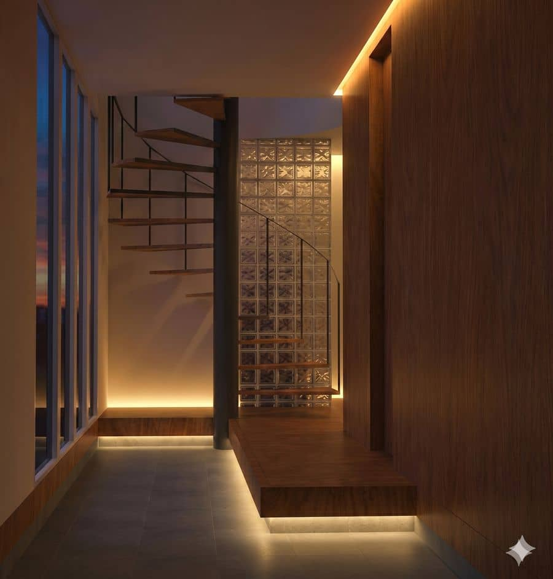
- 3F
主寝室 13.55㎡ ／ 寝室 9.72㎡ ／ ウォークインクローゼット ／ バルコニー ／ 天窓Master bedroom 13.55㎡ / Bedroom 9.72㎡ / Walk-in closet / Balcony / Skylight
- 2F
リビング・ダイニング・キッチン 36.11㎡ ／ パントリーLiving, dining & kitchen 36.11㎡ / Pantry
- 1F
玄関・土間 ／ 畳の間（納戸）13.30㎡ ／ 浴室 ／ 洗面Entrance & doma (earthen floor) / Tatami room (storage room) 13.30㎡ / Bath / Powder room
※面積は計画図面上の数値です。計画段階のため変更になる場合があります。※畳の間は「納戸」として扱う室です。* Areas are taken from the plan drawings and may change. * The tatami room is classified as a storage room (nando).
VIEW
The view from the top floor
三階から、川を望む

眼下に高野川の流れと、川沿いの緑。その先へと、空が広がります。
Below, the Takano River and the green along its banks; beyond, an open sky.
CRAFT
Built by hand,
frame by frame
木を組み、家を建てる
2026年夏、木の骨組みが三層の高さまで組み上がりました。架構の中心には、三つの階をつなぐ螺旋階段。図面の線が、少しずつ住まいのかたちになっていきます。
In the summer of 2026, the timber frame rose to its full three storeys. At its heart, a spiral stair links every level. Line by line, the drawings are becoming a home.


上棟時の様子（2026年7月撮影）The frame at completion of the roof structure (photographed July 2026)
GLOSSARY
Words of this place
この土地のことば
-
糺の森
Tadasu no Mori
下鴨神社の境内に広がる原生林。古代の山城の植生を今に伝えるといわれます。
The primeval forest within the grounds of Shimogamo Shrine, said to preserve the vegetation of ancient Kyoto.
-
瀬見の小川
Semi no Ogawa
糺の森を流れる清らかな小川。古くから和歌に詠まれてきました。
A clear stream that runs through Tadasu no Mori, celebrated in classical Japanese poetry.
-
鴨川デルタ
Kamo River Delta
賀茂川と高野川の合流点。亀や千鳥のかたちをした飛び石で渡ることができます。
The confluence of the Kamo and Takano rivers, crossed by stepping stones shaped like turtles and plovers.
-
葵祭
Aoi Matsuri
毎年5月15日、下鴨神社と上賀茂神社で行われる祭。京都三大祭のひとつ。
Held every May 15 at Shimogamo and Kamigamo shrines; one of Kyoto's three great festivals.
-
五山送り火
Gozan no Okuribi
8月16日の夜、京都を囲む五つの山に「大」の字などの火が灯ります。
On the night of August 16, fires in the shape of characters such as “大” light five mountains around Kyoto.
-
結界
Kekkai
内と外をゆるやかに隔てる境界。通りから住まいへと気持ちを切り替える「間」の考え方。
A quiet threshold between outside and inside — the idea of a pause between the street and the home.
SEASONS
Kyoto, season by season
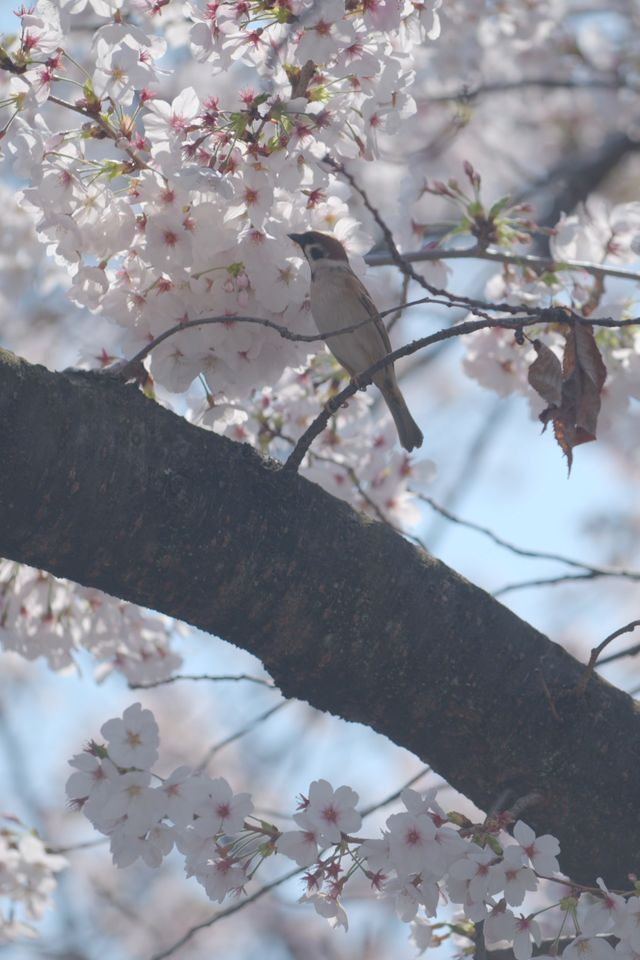
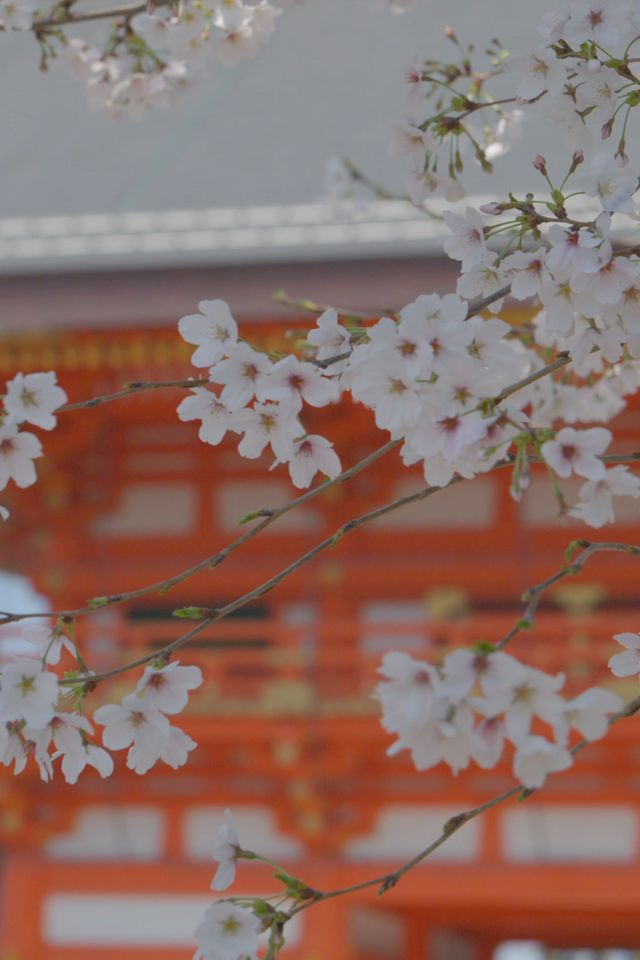
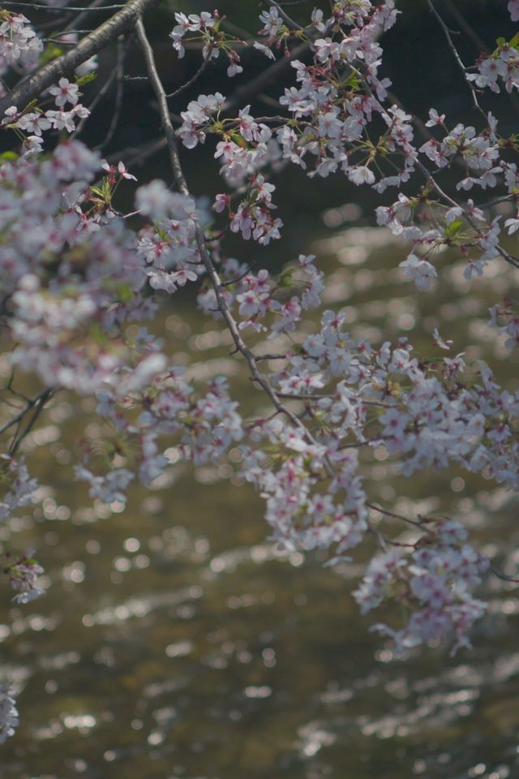
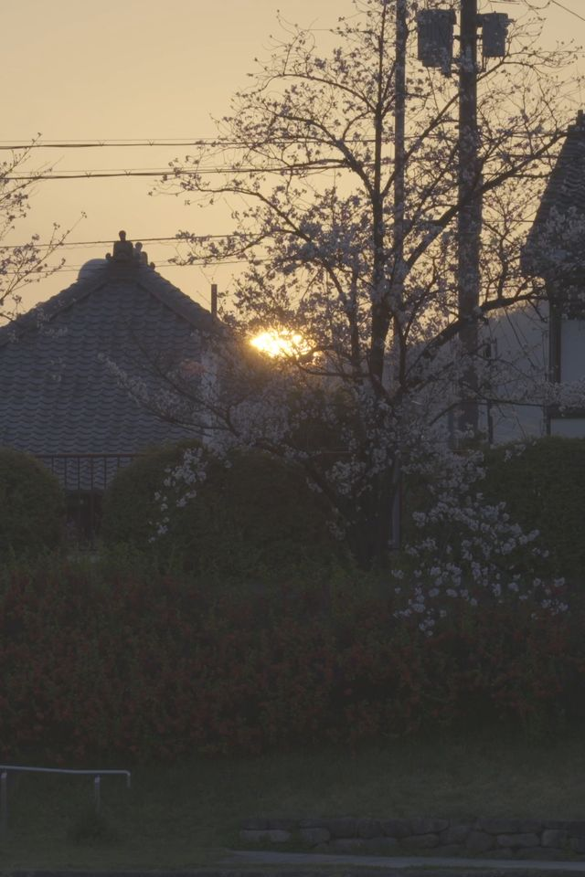
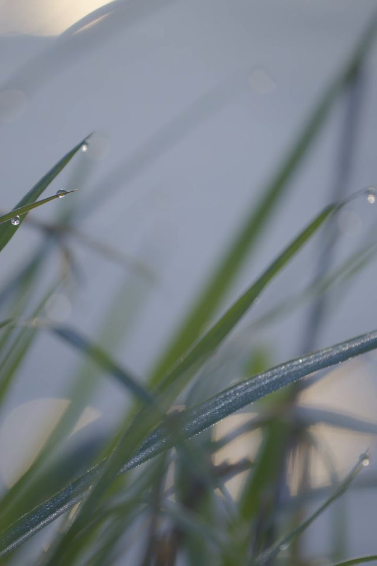
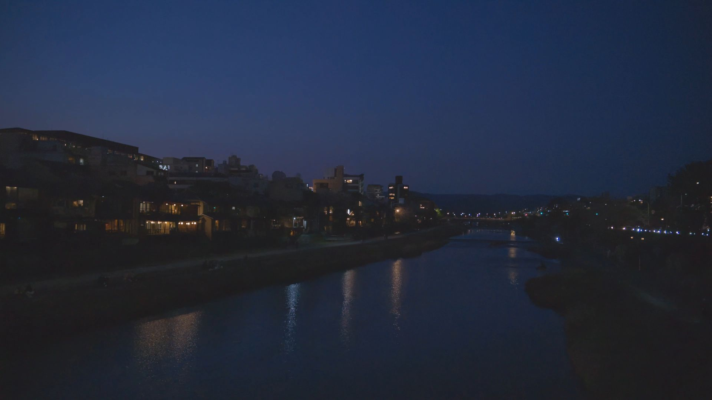
夜、川面に灯りが揺れる。At night, lights shimmer on the river.
ACCESS
Location & access
所在地と交通
※概略図です。位置・縮尺は正確ではありません。* Schematic map, not to scale.
京都市左京区田中上柳町Tanaka Kamiyanagi-cho, Sakyo-ku, Kyoto, Japan
- 最寄駅Nearest station
- 京阪本線・叡山電鉄「出町柳」駅Demachiyanagi Station (Keihan Main Line / Eizan Electric Railway)
- 大阪方面To Osaka
- 京阪特急で大阪・淀屋橋まで乗り換えなしDirect Keihan limited express to Yodoyabashi — no transfers
- 洛北方面Northern Kyoto
- 叡山電鉄で八瀬・比叡山、鞍馬・貴船へEizan Railway to Yase, Mt. Hiei, Kurama and Kibune
- 周辺Nearby
- 下鴨神社・糺の森／鴨川デルタ／旧三井家下鴨別邸Shimogamo Shrine & Tadasu no Mori / Kamo River Delta / Former Mitsui Family Shimogamo Villa
- 所在地Location
- 京都市左京区田中上柳町Tanaka Kamiyanagi-cho, Sakyo-ku, Kyoto
- 階数Floors
- 地上3階Three storeys above ground
- 販売状況Status
- 先着申込受付中Accepting applications (first come, first served)
販売価格・面積等の詳細は、内覧時にご案内いたします。Price and full details will be provided at your private viewing.
CONTACT
Private viewing
内覧のご案内
先着申込受付中・内覧ご予約承り中。
内覧・ご購入のご相談は、下記よりお問い合わせください。
We are now accepting applications on a first-come, first-served basis. To arrange a private viewing or discuss a purchase, please contact us below.
プリンシパルホームでは、新築・リノベーションのご相談も承っております。Principal Home also welcomes enquiries about new builds and renovations.